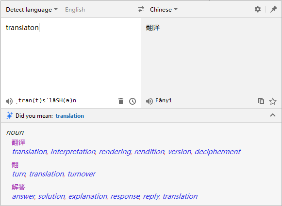
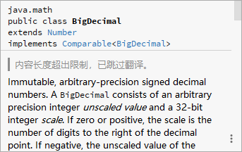
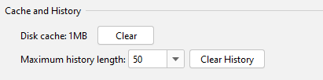
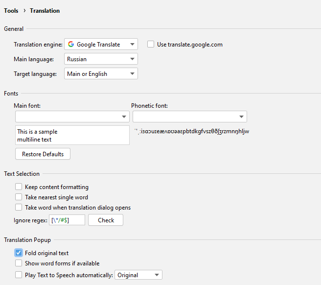

Version 3.0 (2020-12-05)
Welcome to Translation v3.0, which includes the following major updates：
- New plugin logo - the plugin logo has been redesigned
- New user interface - a brand new translation dialog and Settings page UI
- More keyboard shortcuts - still using a mouse? No need for that!
- Disk cache - now supports the disk cache
Logo
We've designed a new logo for the plugin：

Translation
Translation dialog
The user interface of the translation dialog has been redesigned to make the translation dialog more concise and easy to use.

Keyboard shortcuts
We've added a lot of useful shortcuts to the interfaces of the translation dialog, translation popups, etc. You can now use the keyboard for most actions：
-
Translate dialog shortcuts：
- Display the list of source languages - Alt + S
- Display the list of target languages - Alt + T
- Switch between languages - Alt + Shift + S
- Pin/unpin a window - Alt + P
- Play TTS - Alt/Meta/Shift + Enter
- Save to Word Book - Ctrl/Meta + F
- Show history - Ctrl/Meta + H
- Copy translation - Ctrl/Meta + Shift + C
- Clear input - Ctrl/Meta + Shift + BackSpace/Delete
- Expand more translations - Ctrl/Meta + Down
- Hide more translations - Ctrl/Meta + UP
-
Translate bubble shortcuts：
- Open dialog - Ctrl + Shift + Y / Control + Meta + U
-
Quick Documentation window shortcuts：
- Enable/disable automatic translation - Ctrl + Shift + Y / Control + Meta + U
Quick Documentation translation
For documents with content lengths that exceed translation limits, translations are skipped. The following hint will appear：

The disk cache
The translations will now be cached to disk. The next time the same translation is needed, it will be read directly from the cache.Of course, you can clear the cache in the Settings page：

Settings page
We've redesigned the user interface for the Settings page, which is now more in line with IDEA's UI style. In addition, the Settings page has now been moved to the Settings > Tools group. Oh, but don't worry about not being able to find it. You can quickly enter the Settings page from an easily accessible location in the translation dialog.

Acknowledgement
Thank you very much to the following people who have contributed to this version：
- Nikolay Tropin (@niktrop)
- Unknown Designer (@JetBrains): Designing the new logo for the plugin PR #602